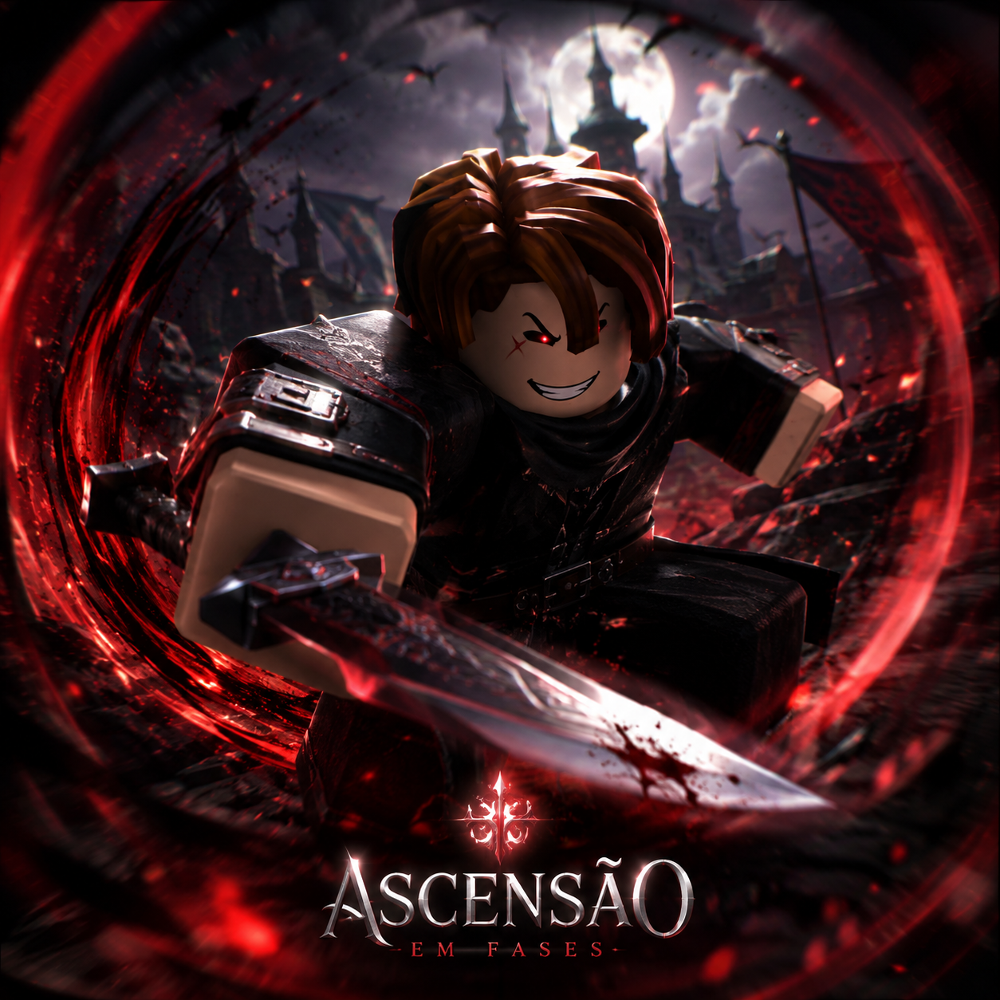

1–20
Sobrevivente. Aprenda as regras da fronteira.
Uma fronteira onde revólveres dividem espaço com magia, mortos caminham e cada nível muda sua forma de sobreviver.

Explore cidades, desertos e ruínas sobrenaturais. Missões, escolhas e alianças definem sua reputação enquanto a Ascensão acontece em fases — ampliando habilidades, perigos e regiões.
Escolha uma classe para abrir seu registro.
Explosão de dano, furtividade e críticos. Frágil, mas letal quando escolhe o momento certo.
Cada origem altera afinidades, resistências e opções narrativas.
Sobrevivente. Aprenda as regras da fronteira.
Caçador. Especialize a construção e forme alianças.
Lenda. Regiões e inimigos raros são revelados.
Ascendido. Sua história muda o próprio mundo.
Sugira habilidades, inimigos, cidades e histórias da fronteira.